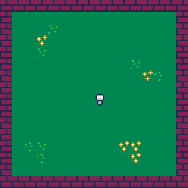
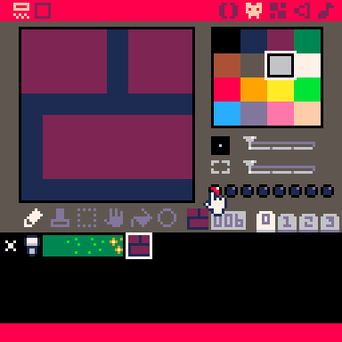
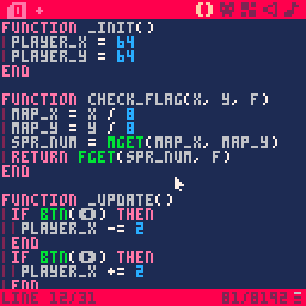
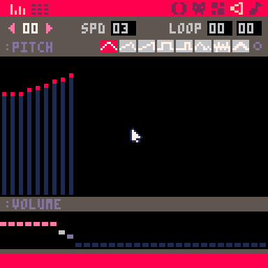

guide to pico8
preface
this is not a full instruction manual for pico8. that exists.
this is just meant to be a basic introduction to making games in it, and some effects that are useful.
think of it like a cookbook.
basic familiarity with simple programming patterns is assumed.
the console
when you open pico-8 you will be met with this screen.

this is the console. this is where you will switch between games, and save and load them.
you can type help to open this help message. (lowercase is shown as uppercase, and uppercase is shown as various symbols)
these are the commands you can use to navigate pico-8's filesystem and load games.
you can start by running install_demos to install some demo games onto your system to the /demos/ folder.
at any time, you can run ls to show what is in the current directory.

if you run it now, all you'll see is the demos folder. let's go into it.
you can run cd demos to enter the demos folder. if you want to go back, run cd .. to go to the folder above you, or cd / to go to the root of the filesystem (you start there).
let's see what's in the demos folder.
here are some demo .p8 files, one way of sharing pico-8 games.
let's give one of them a go! type load jelpi to load in the jelpi.p8 file, and type run to run it.
the default controls for pico-8 on a desktop computer are the arrows, z for the {O} button and x for the {X} button.
try and beat the first level of jelpi. if you do, you will notice that the second level is empty! oh no! let's fix the game so it has a second level. press escape to close the game.
the editors
pico-8 can edit any .p8 file that you find. let's start by editing jelpi.
press escape to open the editors! you'll see a lot of code. ignore it for now.
there are several tabs up the top. at the top left, there are code tabs, for organisation. at the top right, there are the different editors. you can click on the icons to change editor.
the sprite editor
this one's the easiest to understand, so we'll start here. here you can edit the sprites that are used in the game. there are various tools and colours to use. there are also some tabs 0-3 above the array of sprites, to view different sprite banks.
banks 2 and 3 may look a bit odd, however this is because the second half of the sprite editor and the second half of the map editor (coming later) share the same memory meaning only one can be used at a time.
try editing some of the sprites! in this game, black is used as the transparent colour. when you make your own game, you can pick your own colour to act as transparent.
the map editor
here you can edit the game's map. some games won't use this, but it is invaluable in others.
you can use the arrow keys to scroll the view to see other parts.
in jelpi, level 2 is stored directly below level 1. try building a level!
the code editor
in the code editor, you can program the game.
there's one thing we'll have to do before you can test your new level. go back to the first tab, and change level=1 in the code to level=2. now play your new level! if you want to improve it, do so.
if you want to change the sign's message, scroll down in the code editor and change the value of sign_str.

sharing
let's save your game, then share it as a .p8.png cartridge.
before you share it, remember to reset level=1, or don't, if you want players to start directly at your new level.
now let's go back to the root folder by running cd /.
to save your new cartridge, run save filename, where filename is the filename you want to save it with. this will save it as filename.p8 in the root directory.
let's open the folder! run folder to open it in your operating system's file manager. you can share the .p8 file, but...
run export filename.p8.png. this will save it as a shareable, playable, p8 file. to change the icon for it, press ctrl+shift+7 in game. to change the text, edit the first two lines in the code editor.
to load a p8.png, copy it into your pico-8 folder, then type load filename.
here is the finished example cartridge, following these instructions.

(you can save and run this!)
making your own games
now to learn the basics of game development. first, type reboot to reload the pico-8 and clear out the old game.
now, let's press escape to open the code editor.
structure of a pico-8 game
there are three functions which are part of a pico-8 game. _init, _update, and _draw.
the _init function is called when the game starts, so it is used to set the initial state of the game.
the _update function is called once every frame. this is useful for the logic of the game.
the _draw function is also called once every frame... however if the game is lagging, the draw function will wait, whereas the update function will keep running, resulting in low FPS, but the same gameplay.
let's start by going into the sprite editor and drawing a player sprite. you can use any sprite slot, but I will use sprite slot 001.

now let's go back into the code editor and type out our three functions.
in this demo game, we'll have a player that can move around a 2D world with two screens.
to start, let's create some variables to store the player's position, and draw them in onto the screen using the spr command.
the screen of the pico-8 is 128x128 px large.

there it is! our player! but you may notice that the "run" text is still on screen.
this is because pico-8 does not clear the screen by default. let's add that in now by creating a map.
draw in some sprites for grass and a wall, and place them into your map editor, in a 16x16 grid of tiles.
now, just by calling the map function in our draw step, you can have your map rendered to the screen!

this is great! now let's get the player moving.
inputs
let's write out our _update function now.
you can check for player input by using the btn function in the update step. it takes two arguments, but the second one is optional.
(you can write out direction symbols, and the X and O buttons by typing shift+L/R/U/D/X/O)
that's great! but we have one issue. the player can walk through walls. we haven't stopped them from doing so. let's do so now, using sprite flags.
to start, go back to the sprite editor to your wall sprite, and click on one of the eight circular buttons to set a flag we can check for in code.

now, let's write a function to check sprite flags (as doing it manually would be quite repetitive)
helper function
in this function, we'll use the mget and fget functions to get the contents of the map at a position, and if it has a certain flag set.

alright! your player should now be stopped by walls!
now, let's add a second screen.
moving the camera
start by drawing a collectible sprite (with its own flag) and creating a 16x16 screen to the right of your current one involving it. include an entryway to it on your first screen.

brilliant! let's test out our new screen by walking to the right and... oh.
we need to manually move the camera to the right when the player reaches the second screen.
go back to the _draw function in your code editor, and add this code snippet to it.
this uses two new functions, flr and camera. flr is the standard floor function, and camera sets the origin of the game's camera to the position provided.
now, let's add
collectibles
let's add some new variables to our _init function.
let's add some code to render how many we have!
this uses two new features. the .. operator, and the print function. the .. operator concatenates two strings (or converts numbers into strings). the print function has one, three, or four arguments.
you can just have print("text") to print some text to screen, print("text", x, y) to move it around, and print("text", x, y, col) to print it in a certain colour.
now, let's make it so you can actually pick up the collectibles!
add this to your _update function after the movement.
this uses the mset function, which works quite like the mget function, except it has a third argument which determines what the tile will become.
this should work, but it's a bit bland. time to introduce...
the sound editor
here you can create sound effects and parts for music (which will come later).
let's create a simple sound effect for when the player collects a coin.

if the sound effect is too fast or too slow, edit the "spd" value at the top. lower values are faster.
now go back to your code editor, and add the sfx function into your collectible code.
now your sound effect should play when you collect the coin!
finally, let's add some...
music
go back to the sound editor, open a new sound, and click the other button at the top-left. this opens the tracker view for the sound effect you have selected.
== todo! the music editor! ==